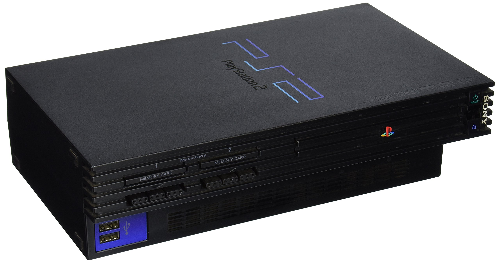

History of Online Gaming
1993
Nintendo, Sega, and Atari start to push online gaming forward
1994
"Marathon" first-person shooter game released
Pay to play service "Avalon MUD", multiplayer RPG released
"Warcraft" is developed, becoming one of the biggest online gaming franchise to date
1996
"Kingdom of the Winds" and "Quake", the first multiplayer FPS, are released
Windows '95 is released and affordable Ethernet becomes available to the masses, allowing for the online gaming community to expand even further
1999
Nintendo releases an add-on feature to allow consoles to connect and play online
"Everquest" is released, the first commercially viable game in multiplayer online gaming spaces
2000
Sega Dreamcast, the first console with true internet connection, was released
Sony Playstation 2 was released, also featuring internet connection. This console was much more popular, given their previous release of the Playstation 1
2001
Nintendo Gamecube with online capabilities was released
"Windows Media Player" and "DivX" video streaming starting to emerge
2002
Xbox released a console with Xbox live to connect to the internet
"Halo" encouraged multiplayer online gaming and interaction within the gaming community

2004
Playstation Network, Xbox Marketplace, and Wii Marketplace, as well as the release of "Halo 2" on Xbox and "World of Warcraft" on the computer all furthered the development of the online gaming community
2005
YouTube is created, fostering a community of posting videos. Streaming games becomes popular on YouTube, streaming right to the internet

2006
Playstation 3 was released and Nintendo Wii with wifi capabilities was released
2007
Smartphones became popular, leading to a spike in mobile gaming amoung the general public
Zynga was founded and created many games for mobile usage
2009
"Angry Birds" is released and is the first game to blow up the appstore

2011
"Twitch" platform emerges, introducing live streaming, allowing interaction between viewers and streamers in real time
As viewership grew rapidly (2012: 77 thousand average, 2013: 200 thousand average, 2014: 400 thousand average), Twitch introduced a partnership program, allowing streamers to earn money through ads on their channels
\2012
Nintendo Network for Wii U
2014
Playstaton 4 with improved internet capabilities is released, featuring "Playstation Share Play" which allows users to share games with friends over the internet
2015
YouTube Gaming was released, linking to YouTube directly for easier access
It was not as popular as Twitch; YouTube Gaming held 5.5% of market share in the video game streaming industry while Twitch held 91.1%
2016
PokemonGO was released, the first augmented reality mobile game
2020
Facebook Gaming replaces another streaming service that ended in 2020, but only holds 3.4% of market share, while Twitch remained the dominant streaming service, averaging over 1.6 million views